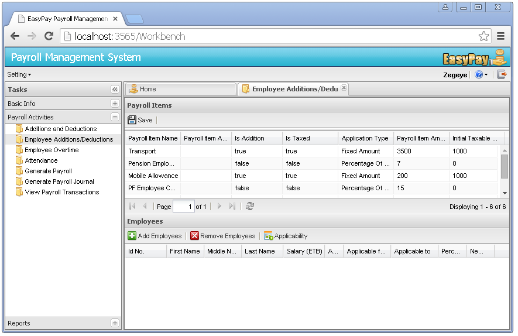
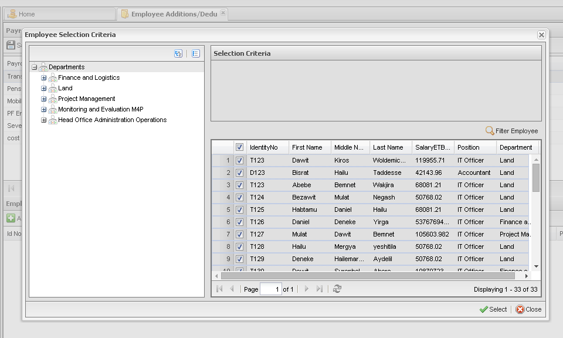
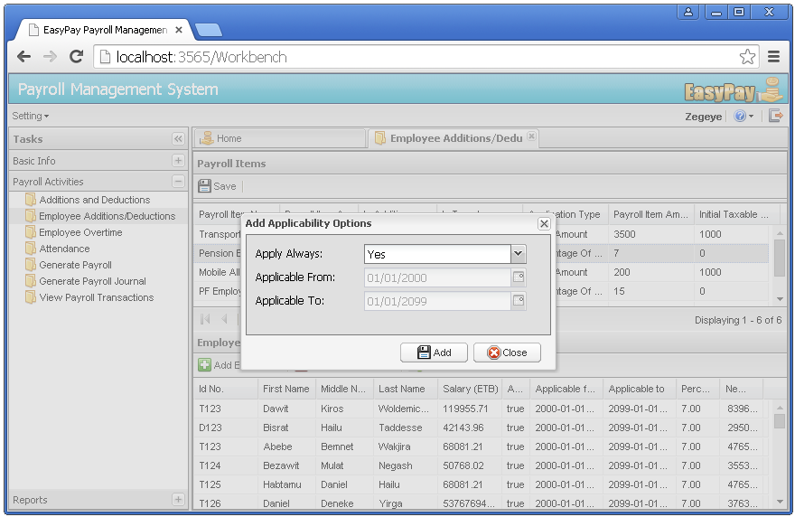

Managing Employee Additions and Deductions
Not every employee is entitled to all payroll items that exist in an organization. Once we create the Additions and Deductions using the system, we have to then associate these payroll items with the respective employees. For instance: Person X could be entitled to Transport Allowance while another employee named Person Y may not be entitled to Transport Allowance, instead he could have a Mobile Allowance. The following section briefly illustrates how to manage such associations using EasyPay.
Associating payroll items with employees
Step 1: Click on the Payroll Activities menu -> Click on the Employee Addition/Deduction sub menu. Then a new page that will allow users to associate payroll items with employees will be displayed as follows

Step 2: Select a particular payroll item from the top grid E.g. Pension Employee Cont
Step 3: Then click on the add employees button. A new window that helps users to select list of employees will pop up

Step 4: Using the provided filtering criteria, select employees who are entitled to that particular payroll item. Then click on the select button.
Step 5: After selecting the employees, Click on the Applicability options button. This will allow users to define the applicability period range of the payroll item for the selected employees. There are two options for defining applicability: 1) Select “Yes” from the Apply Always drop down menu. Setting this option to true will associate the payroll item with the employees for an indefinite period of time, therefore whenever generating payroll transaction for any given period, the system will always associate that payroll item and the selected employee. 2) Select “No” from the Apply Always drop down menu. Then specify the period or date range, so that the system will only associate that particular payroll item for the specified date range. Then click on the Add button.

Step 6: After defining the applicability range, enter the payroll item amount on the New Amount column of the bottom grid for each employee.
Step 7: After you finish associating, selecting applicability range and filling the payroll item amount, click on the Save button which is located at the top left corner of the payroll items panel.
Congratulations ! You have now successfully associated an employee with a payroll item.